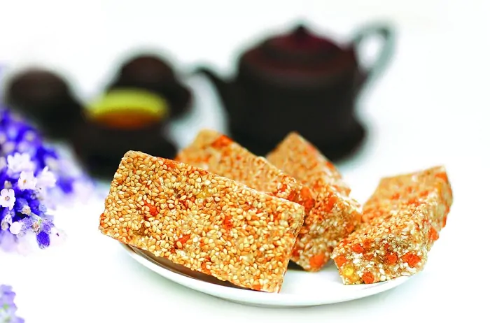
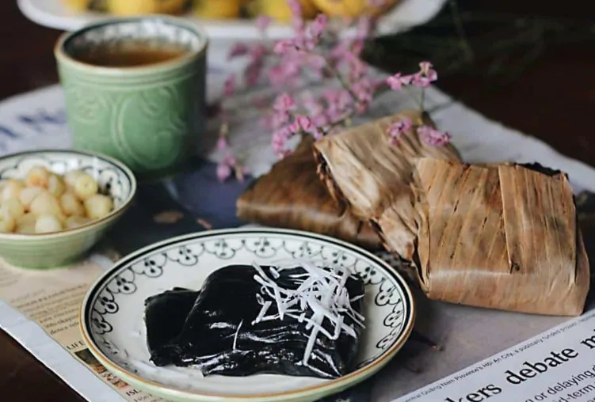
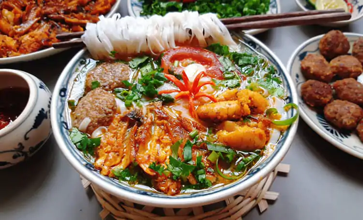

Chào mừng đến với Thái Bình
Sau đây là các đặc sản của Thái Bình:
1.Bánh Cáy

Bánh Cáy là gì?
2.Bánh Gai

Bánh Gai là gì?
3.Canh Cá

Canh Cá là gì?
Trên đây là ý nghĩ và số ít trong nhiều đặc sản của Thái Bình
Để tìm hiểu kĩ hơn vui lòng click vào đây!